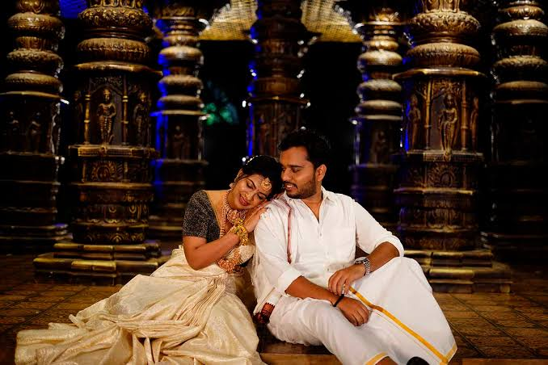

THE STORY BEHIND THE LENS
We Don't Just Capture Moments.
We preserve the feeling behind them.
ABOUT CHIRKUT
Every Frame Has A Story To Tell.
Chirkut — Your Wedding Note was created with one simple belief: the most beautiful memories are often found in the smallest moments.
A nervous smile before the ceremony. A parent's silent tear. Friends laughing between rituals. Two people looking at each other when nobody else is watching.
These are the moments we look for. Because years from now, photographs shouldn't just show you what happened. They should remind you how it felt.
“We don't photograph weddings. We photograph the memories you'll return to.”

THE CREATIVE MIND
Meet Ritam Ray.
Founder & Creative Director
For Ritam Ray, photography is more than simply pressing a shutter. It is about observing people, understanding emotions and finding beauty in moments that most people might overlook.
With a camera in his hands, Ritam approaches every wedding as a story waiting to unfold. His focus is not only on how a photograph looks, but on what it makes you feel.
Observe
Notice the moments before they disappear.
Feel
Understand the emotion behind every frame.
Create
Turn fleeting moments into timeless stories.
THE VISION
“The goal isn't to create perfect pictures. It's to create pictures that feel real.”
Weddings are beautifully unpredictable. Plans change, emotions overflow and unexpected moments become the ones people remember forever.
That's where our approach comes in. We believe in giving couples the freedom to experience their wedding instead of constantly posing for it.
Our cameras stay close, but never get in the way of the moment.
THE PEOPLE BEHIND THE STORIES
One Vision. One Team.
Behind every beautiful wedding film is a team working quietly, creatively and relentlessly to make sure no important moment goes unnoticed.
More Than A Camera Crew.
Chirkut is a team of photographers, cinematographers, editors and creative minds who work together to tell your story from every possible perspective.
While one person captures the bride's emotions, another might be documenting the reactions of the family. While our cinematographers build the visual story, our editors carefully shape those moments into a film that feels uniquely yours.
Every member of the team plays a part in making sure your wedding memories are captured completely.
Photographers
Candid, traditional and artistic wedding photography.
Cinematographers
Visual storytellers creating cinematic wedding films.
Editors
Turning thousands of frames into meaningful visual stories.
Creative Team
Planning, styling and creating the visual experience behind every project.
OUR APPROACH
From The First Conversation To The Final Frame.
Understand
We get to know your story, your people and what matters most to you.
Observe
We look beyond the obvious and wait for the moments that happen naturally.
Capture
Our photographers and filmmakers preserve every emotion with intention.
Craft
Every image and film is carefully edited to create a timeless final story.